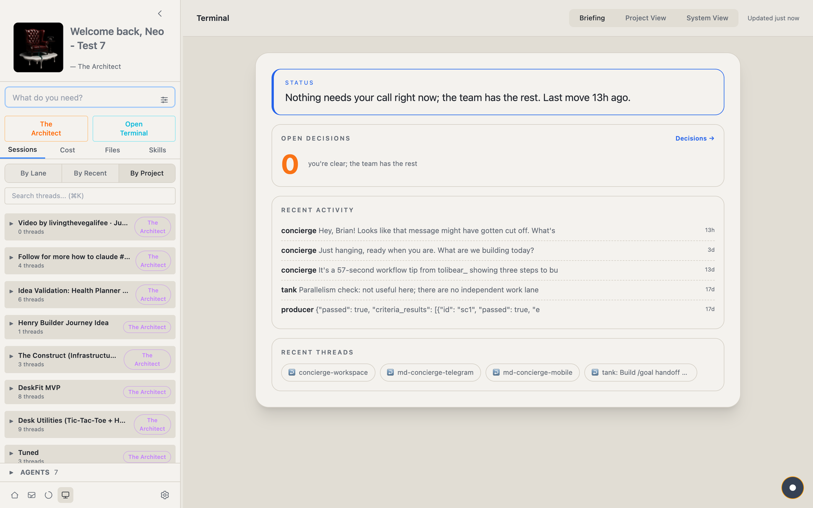
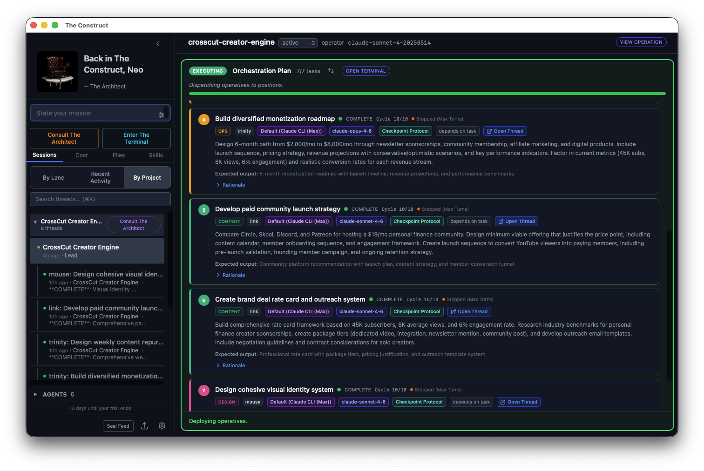
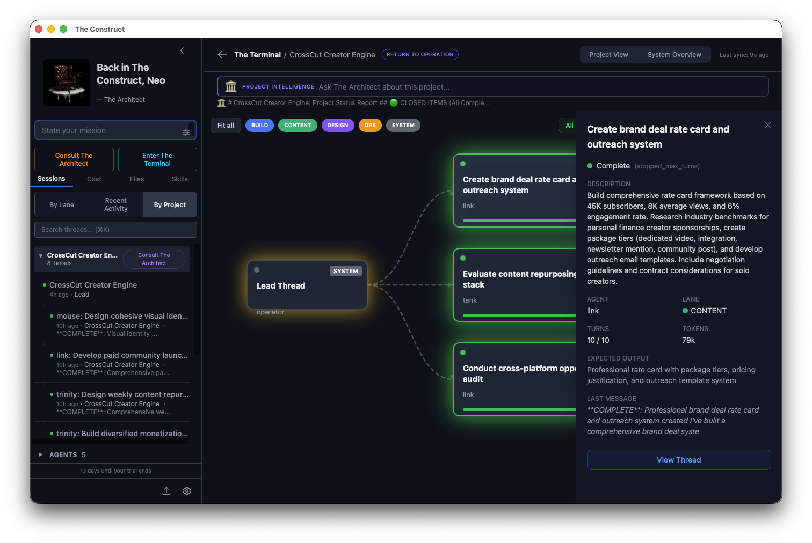
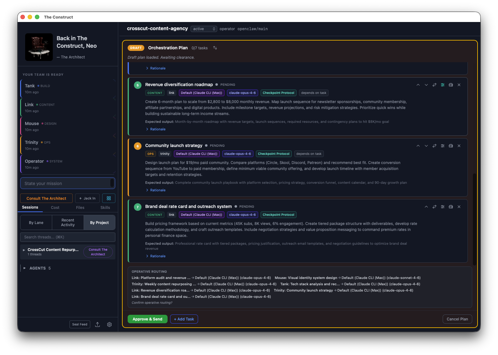
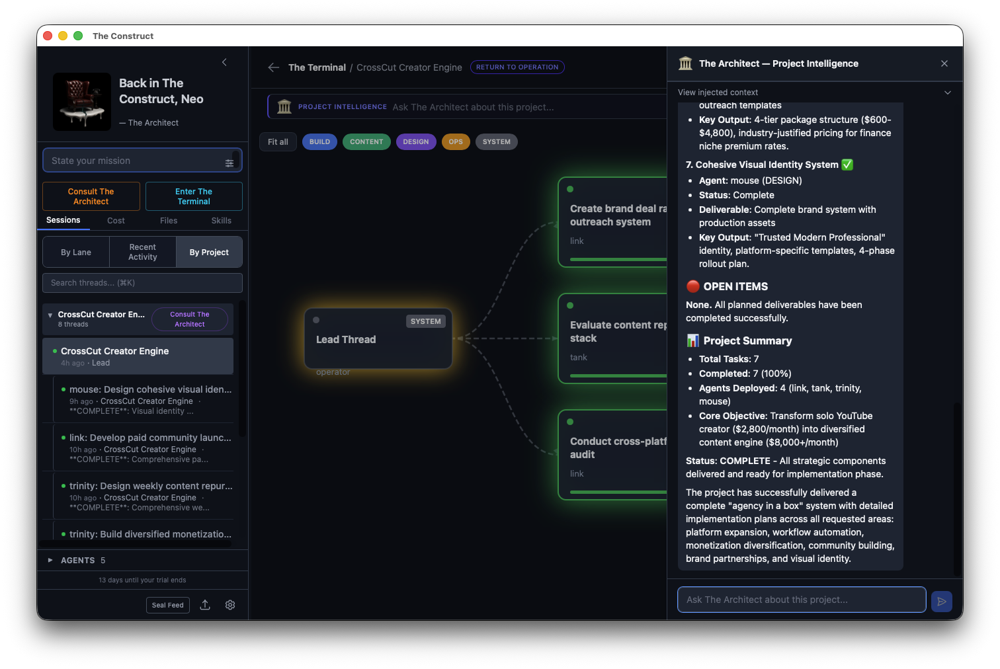
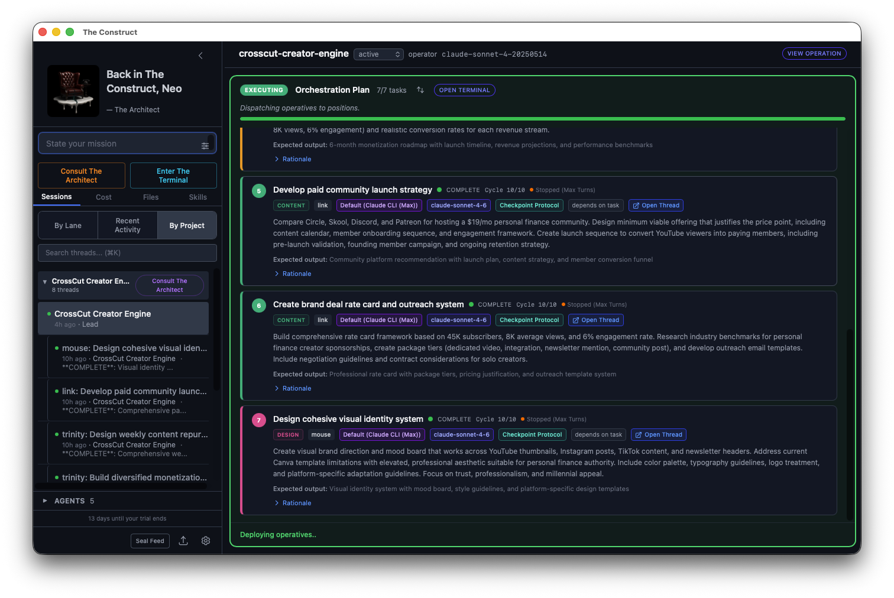
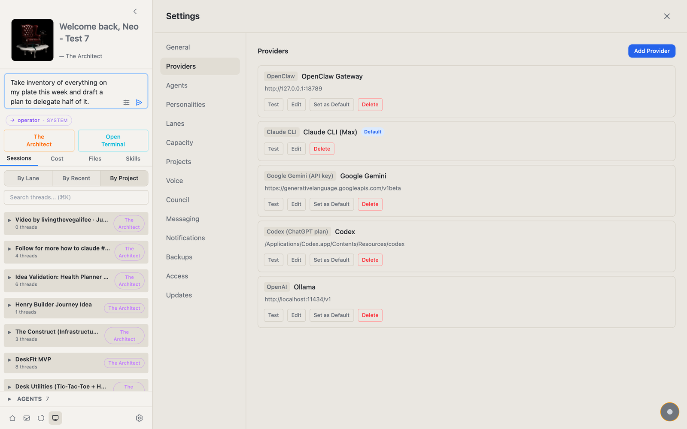
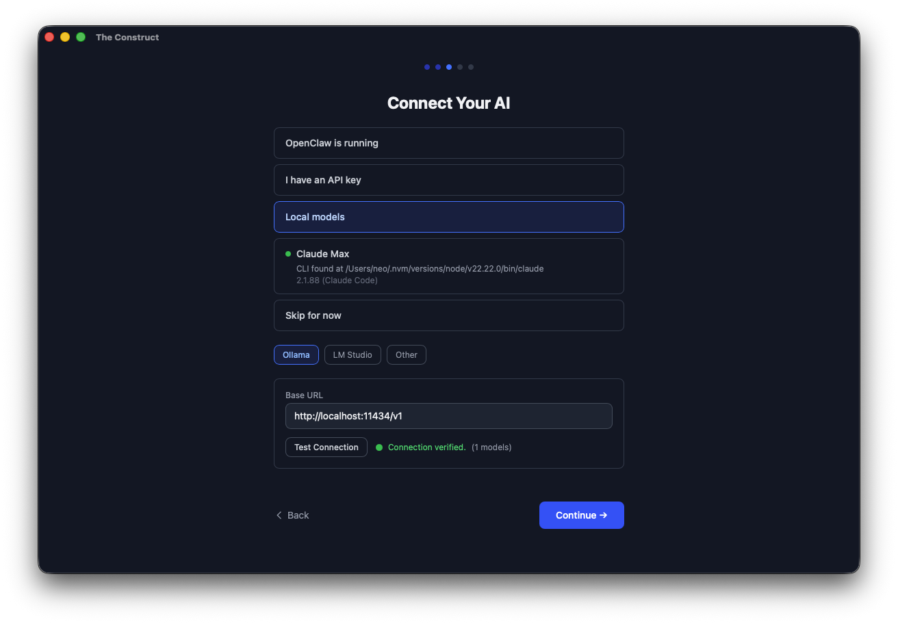
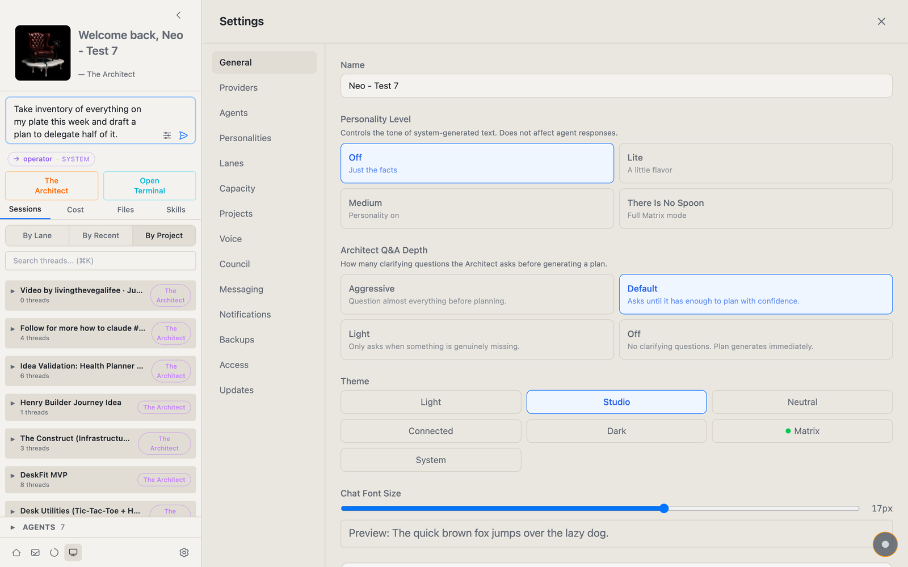
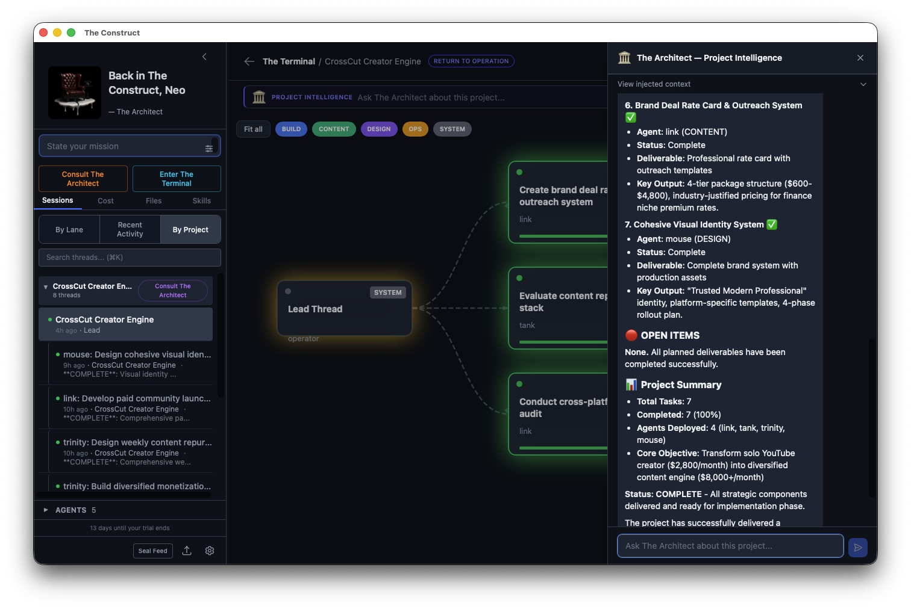

One prompt.
Full control.
A native desktop app that turns a detailed project brief into a coordinated fleet of AI agents — with a live task graph so you see everything and miss nothing.

Works with the AI subscriptions you already pay for — Claude Max, ChatGPT/Codex, Gemini CLI, GitHub Copilot — plus direct API keys, Ollama, LM Studio, or any OpenAI-compatible endpoint. No new bill.
You decide how much you're involved.
Configurable involvement levels let you choose your operating mode. From hands-on to fully autonomous.
Direct every step
Full manual control. Review every output, guide every decision, steer the work exactly where you want it to go.
Get pulled in at checkpoints
Agents work autonomously until they hit a blocker or checkpoint. The Decision Room surfaces what needs your attention. Everything else runs.
Set the brief, check in when you want
Approve the plan and let the fleet execute. Continuation rules keep agents moving. Operate like a CEO of your projects, not a babysitter.
What it does
Not monitoring what happened.
Orchestrating what happens next.
Other tools watch your agents. The Construct coordinates them — plans the work, dispatches the briefs, manages dependencies, surfaces decisions, and keeps the project moving forward.

Orchestration
The differentiator.
Describe what you need. The system drafts a plan: which agents, what order, what dependencies. You approve before execution. You stay in control without doing the coordination manually.

The Terminal
See everything. Miss nothing.
Three zoom levels of visibility into your projects. The Task Graph shows a live directed dependency flow — gold glow on the lead node, green as tasks complete, lane-colored pulses on active work. Minimap, zoom, pan, lane filters. Click any node to see details and jump into the agent's conversation. Zoom out to Project View for a card grid across all your projects. Zoom out further to System View — your full agent fleet, provider health, and global stats. Mission control for everything you're running. Auto-refreshes every five seconds. The graph is alive.

The Decision Room
You will get pulled in. But only when it matters.
Agents work autonomously until they can't. When one hits a blocker or reaches a checkpoint, a card appears in the Decision Room: what's needed, and why. You make the call, work resumes. No notification spam. No "here's what I'm going to do next" updates. Just the decisions that actually need a human. Step in, decide, step out.

Context Meter + Wrap and Transfer
The context crash killer.
Every thread shows token usage in real time. You can see exactly how close you are to the edge — before the AI starts forgetting. When you're running hot, the Wrap and Transfer protocol packages your full session state — decisions made, work completed, open items, carry-forward context — and moves it losslessly into a new thread. No starting over. No "as I mentioned earlier." No lost momentum. This is the feature that saves projects other tools let die.

Project Intelligence
Ask your project a question.
The Architect sees everything your agents have found across every thread. Ask "what did the content team find about venue options?" and get a synthesized answer — not a link to a thread, an actual answer with context from across the entire project. For orchestrated projects, The Architect knows the plan, the task graph, and all agent findings. For manual projects, Morpheus provides cross-thread intelligence and pattern recognition. Every message gets fresh context — assembled in real time from your actual project data. A Context Inspector shows you exactly which threads were analyzed and how the token budget was allocated. Full transparency.

The LLM Council
One hard question. All your frontier models. A verdict.
For the calls you'd normally agonize over alone: convene the Council. Claude, GPT, and Gemini each draft an answer, then rank all the drafts blind — no model knows which draft is whose. The winning draft's author takes the chair and writes the verdict, while persona advisors (a red-team Adversary among them) critique from the side. Cross-vendor deliberation with anonymized ballots, a live roster, and a Stop button that actually stops it. Convene it from the Decision Room or straight from the Dojo. You can hand-pick the panel in Settings, or let it seat your strongest connected models automatically.

Six-Lane Framework
Structure that keeps agents coherent.
SYSTEM, BUILD, CONTENT, DESIGN, OPS, and RESEARCH — staffed by a named crew you pick in setup (Operator, Tank, Link, Mouse, and Trinity among them). Every message lands in the right lane with the right project header.

Personality System
Make it yours.
A four-level personality slider: Off (corporate clean), Lite (a little warmth), Medium (the sweet spot), and There Is No Spoon (full Matrix flavor). 880+ UI strings that change based on your setting: from status messages to agent dispatch preambles to toast notifications. It's a small thing. But it makes the app feel like yours, not like another generic SaaS dashboard.
Voice
Just say it.
One shortcut, from anywhere on your Mac, and you're talking to The Construct. The Dojo listens, answers out loud, and acts on it — pull up live scores, open a page, look something up — without touching the keyboard or leaving what you're doing.
It answers like a person who just knows, not a page of search results. And it stays on a short leash: it'll open things and look them up freely, but it never buys anything, signs in, or submits a form without your explicit yes.
Hands-free, anywhere
A global shortcut opens the mic without pulling you off the screen you're on.
It acts, not just answers
Ask it to show, open, or find something and it does it — then tells you what it found.
Private by default
Your speech is transcribed on-device. Your audio never leaves your Mac.
See it in action
Screenshots
How it works
From idea to structured execution in one session.
Desi runs a custom balloonscape business in Portland. She wanted to expand into a new concept — a Balloon Bar where customers build their own arrangements online, choose from DIY to full-service tiers, and get everything shipped or ready for pickup.
That's not a one-line prompt. That's a real business brief — pricing strategy, competitive positioning, brand extension questions, website platform decisions, fulfillment workflows, inventory tracking, and a launch plan.
The Construct's Architect parsed that brief into a dependency graph: seven tasks across five lanes. Research feeding into branding feeding into website design, with event planning and operations running in parallel.
Tank pulled double duty on pricing and website architecture. Trinity handled the business model and the 90-day launch playbook.
Link mapped the competitive landscape. Mouse built the visual merchandising system.
Desi watched the Terminal task graph light up as work moved through the pipeline.
Her reaction wasn't "cool tech." It was "wait — that's actually getting done?"
Within one session: synthesized venue research, brand direction, website structure, three-tier pricing model, and a launch timeline. Not finished. Structured. Ready for her to make decisions and push forward.

Pricing
The beta is free. Founders lock in for life.
The Construct is in private beta, onboarding in waves. Request access to start: every install includes a 14-day trial, beta testers continue free by invite code, and no card is ever required. Founding members can lock in lifetime access before paid plans open — and your data always stays on your machine: nothing is deleted, export anytime.
Founding Member
Same full access as Operator, locked in for good. A thank-you to the people who believed early.
One payment, fee-free access for the life of the product. No recurring charges. See the Founding Member Terms.
Request founding accessOperator
Everything in The Construct.
or $180/year — planned for public launch
Join the beta- ✓ Unlimited agents and sessions
- ✓ All 6 lanes: SYSTEM, BUILD, CONTENT, DESIGN, OPS, RESEARCH
- ✓ Terminal: Task Graph, Project View, System View
- ✓ Orchestration with Architect plan generation
- ✓ The Decision Room
- ✓ The LLM Council — cross-vendor deliberation on hard calls
- ✓ Voice control — talk to it hands-free
- ✓ Project Intelligence (Architect + Morpheus)
- ✓ Context Meter + Wrap and Transfer
- ✓ Skill System
- ✓ Personality System (4 levels)
- • Mobile access + push notifications — on the roadmap, not in the beta (Mac desktop only for now)
- ✓ Works with any AI provider (OpenAI-compatible)
- ✓ Local data, AES-256 encryption
Nebuchadnezzar
For teams running shared agent fleets.
- ✓ Everything in Operator
- ✓ Shared agent configurations
- ✓ Team visibility and admin controls
- ✓ Centralized billing
FAQ
Questions before you jump in.
No. The Construct works with the AI subscriptions you already pay for — Claude Max (via the Claude CLI), ChatGPT/Codex, Gemini CLI, and GitHub Copilot — with no API keys and no new bill. It also takes direct API keys (OpenAI, Anthropic), Ollama, LM Studio, or any OpenAI-compatible endpoint. You bring whatever AI you already use.
The Construct is in private beta. Request access on this page and we'll send an invite as we onboard in waves. Founding members lock their pricing before public launch. Whatever you create is yours: nothing is deleted, and you can export anytime.
No. The Construct is a native desktop app: your projects, threads, and keys live in a local database on your Mac, and API keys are encrypted with AES-256. Your prompts and anything you share with an agent go only to the AI provider you connect — or nowhere at all if you run a local model through Ollama or LM Studio. The app also checks this site for updates. Full details in the Privacy Policy.
During the beta there's nothing to cancel: access is free by invite code, with no card on file. The founding-member license is a one-time purchase, not a subscription. When paid plans open at public launch, they'll be no-contract and cancel-anytime.
Most AI dashboards monitor what already happened — they show logs, token usage, conversation history. The Construct orchestrates what happens next. It generates plans, dispatches agents to parallel threads, manages dependencies, surfaces decisions, and provides project-level intelligence across all your work. It's a control layer, not a viewing layer.
Reach out. We're happy to work something out for students and active open-source contributors.
Join the build.
Your AI is waiting for a manager.
You've got the models. You've got the ideas. You just need the orchestration layer that turns them into parallel execution with full visibility and control. We're in private beta, onboarding in waves — drop your email and we'll send your invite.
No spam. Just launch updates, early access, and the occasional field note from the build. We only use your email for these updates — see the Privacy Policy.